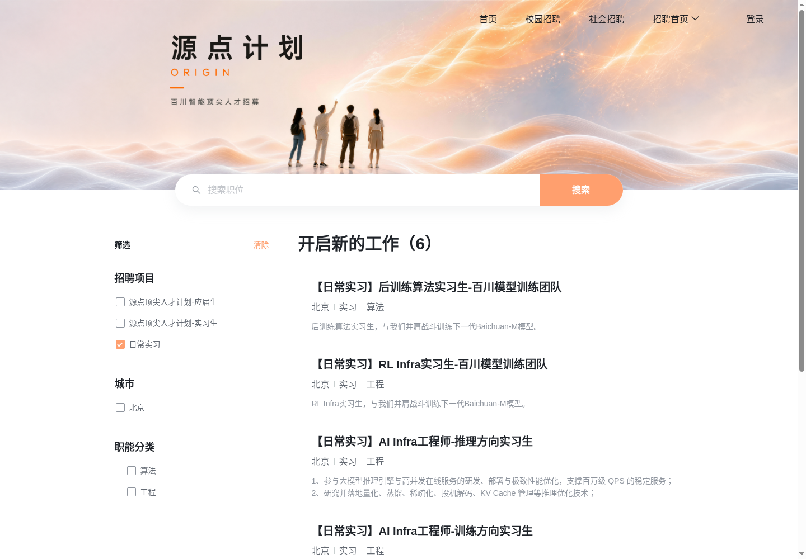
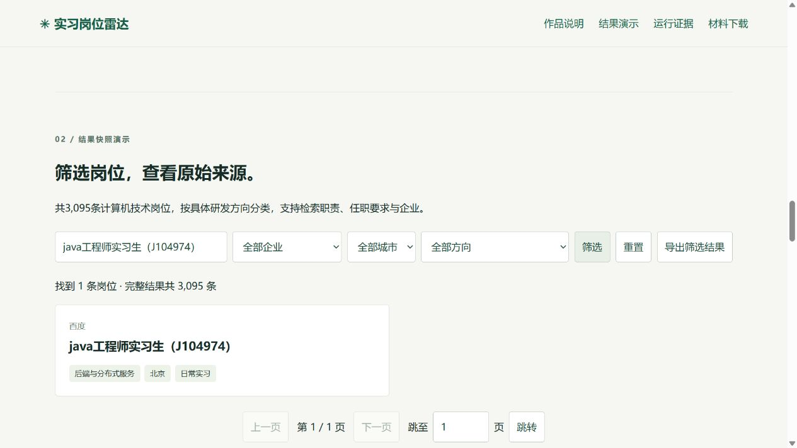
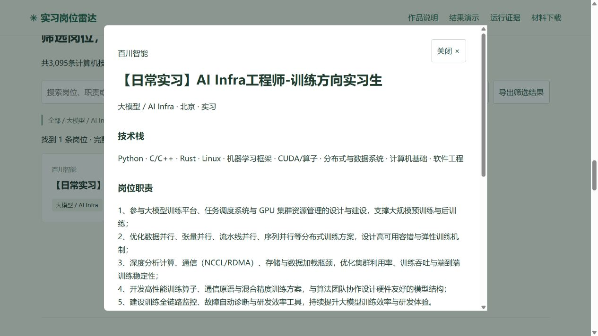

从企业官网，
汇聚下一份实习。
使用 WebFetch 与 Cloud Browser 跨招聘系统采集，
把来源、过程和结果一起留下。
批量采集：2026-10-22 至 23 日 · 补充核验与材料整理：2026-10-27
Lexmount Real Task Challenge 作品说明 | 材料整理：2026-10-27
1. 解决什么问题
企业实习招聘分散在不同官网，招聘系统的动态渲染、筛选和分页方式不同。求职者逐站查找北京、上海、广州、深圳、杭州的岗位，需要重复操作，也难以统一比较技术方向、职责和来源。本作品从51家企业招聘入口清单出发，建立可追溯的岗位库与查询界面，并保留公开企业发现队列。
2. 如何使用 Lexmount 云平台
1. 入口发现与静态读取：Lexmount WebFetch 读取公开招聘介绍和官方 ATS 链接，使用 dump-dom 与 extract --dom-id 复用页面。百川记录保留 DOM ID 896894、请求 ID 7e714c3c-c5f8-4232-b4cc-ac37f11377af，以及6条实习标题，见 evidence/baichuan-ats-domreuse.json。
2. 动态岗位采集：Lexmount Cloud Browser 打开企业官网或官方 ATS，选择实习项目、城市、页码，提取岗位卡、稳定 ID、职责和来源链接。对不同系统采用页面交互、DOM 读取或浏览器页面上下文读取官方列表数据。分页及会话状态见 evidence/ 中的 run 与 pagination 文件。
3. 程序处理与展示：Python 规则负责城市和招聘类型过滤、稳定标识去重、职责归类、JSONL 与 SQLite 入库，FastAPI 和前端负责查询、详情与 CSV 导出。发现调度器串行执行有预算的 WebFetch 搜索任务。
4. 人工与 Codex 参与：人工确定目标、核对官方来源和边界岗位，并曾确认将待判断队列纳入主文件；Codex 协助实现适配、调查与分类复核。分类结果仍含技术、业务及待审核方向，页面可按方向筛选。
3. 已完成结果与统计依据
当前提交快照有 5,213 条去重岗位，来自35家有结果企业。统一企业目录共89家：51家完成岗位核验、7家完成招聘入口核验、31家候选待验证。依据为 results/jobs.jsonl、results/companies.json、SUMMARY.json 和 api_stats.json。原始主文件 SHA256 为 88bc5f72ebe383891914e0176da7be4010c9e4cf75fc47deec8c35a69f0614ed。
5,213条是保留岗位的总数，包含运营、产品、营销和职能等方向。当前规则重算后，方向信息不足的 52条 标为“待审核”；待判断文件为空与方向已全部确认是不同统计。历史文档的293条是旧分类快照。2026-10-27针对原292条待审核岗位补采详情，补齐211条职责和262条任职要求，262条岗位补齐缺失字段；剩余2条要求未核验（面壁智能已下线、百度原编号未检索到）。DeepSeek按官网迁移链接读取研究员方向。原先“原站未提供”提示将未采集误当成缺源内容，现改为明确核验状态。证据见evidence/detail-enrichment/SUMMARY.json。发布材料保留字段核验来源，条数和稳定标识保持不变。
代表性过程：字节跳动读取251页、2,509张岗位卡；快手读取116页、1,153张卡；腾讯三类列表共63页、617张卡，其中日常实习第5、6页有10张重复卡，按稳定ID去重。以上为原站采集卡数，最终保留数量见 SUMMARY.json 的 by_company。
历史双企业采集任务从2026-10-22 06:18:36 UTC运行至06:19:07 UTC，耗时31秒，处理11条，新增6条、更新5条、错误0，依据 evidence/live_api_collection.json。该耗时仅对应此任务。未保存完整账单和工时，未声明总成本或节省比例。
2026-10-27 使用 Lexmount Cloud Browser 再次打开百川官方飞书招聘列表，页面仍显示6条日常实习；保存页面文本、云会话标识和真实截图，见 cloud_recheck_20261027.json 与 screenshots/cloud-baichuan.png。该复核仅覆盖百川，批量数据采集时间为2026-10-22至23日，岗位当前是否开放请以原站为准。
4. 发现的问题与验证结果
- 动态页面：部分 WebFetch 返回 JS 壳或不含岗位卡，改用 Cloud Browser 获得岗位内容。百川 WebFetch 可得到标题但缺少稳定详情链接，Browser 补齐6个链接，见两类百川证据。
- 分页重复与总数变化：腾讯重复页、字节站点总数在运行期间变化，使用稳定ID和分页断点核验。原站卡片数、唯一ID数、最终入库数分开记录。
- 会话关闭延迟：早期双企业任务因状态核验时序失败；延长关闭核验等待后完成11条成功采集。失败记录作为反馈附件，成功任务作为验证依据。
- 详情漏采修复：对原292条待审核岗位重读官网；补齐211条职责、262条要求。腾讯课题页、阿里双语栏目及动态详情分别提取；蚂蚁一页原站字段标签颠倒，按实际内容展示并保留备注。2条缺失要求按下线/未检索到标注，待审核表示分类仍需判断。
- 空数据库初始化：本次验收发现岗位文本中的 U+2028/U+2029 会被 splitlines 拆断，已改为只按LF分隔，并加入回归测试。2026-10-27测试为69 passed，3条依赖弃用提示。另修正页面将企业目录总数误显示为有岗位企业数的问题。
完成部分可独立使用：统一结果文件、岗位检索/详情/导出界面、发现候选队列和分页核验证据。新发现候选仍需补齐官方来源和站点配置；完整自动发现到任意网站采集尚需人工验证。材料站提供结果快照演示，在线页面不会触发新的付费云采集。
5. 演示与核验方法
材料汇总页：https://tlevif.github.io/lexmount-internship-submission/
进入后可阅读作品说明、查看运行截图、按企业/城市/方向检索5,213条结果、打开官网来源，并下载完整提交包与PDF。多个材料汇总在同一入口，无需登录。线上检索为结果快照演示；原 FastAPI 运行截图在 screenshots/local-*.png。
建议核验顺序：阅读本说明；对照百川 WebFetch记录、Browser运行记录和6条结果；打开腾讯分页证据查看重复ID；用 SUMMARY.json 对照结果条数；运行 verify_package.py 校验文件哈希和岗位唯一性。
6. 文件用途与运行方法
- results/jobs.jsonl、jobs.json、jobs.csv：完整保留结果，供程序读取、浏览器演示或表格查看；JSONL只按LF分行。
- results/companies.json：89家企业入口及核验状态。
- evidence/*.json：精选原始运行摘要和分页证据；evidence/detail-enrichment/包含本次详情补采、来源正文与字段核验统计。
- cloud_recheck_20261027.json：本次云浏览器百川复核页面文本；screenshots/ 为真实运行截图。
- workflow.json：本项目执行顺序说明，属于说明性流程清单，不是可直接导入Lexmount的专有工作流格式。
- verify_package.py：Python 3标准库即可运行：python verify_package.py。检查MANIFEST.json列出的哈希、5,213条记录和稳定标识唯一性。
- runnable_source.zip：配套最小运行源码与完整岗位快照，不含凭据。解压后按 RUN.md 安装依赖并启动只读 FastAPI；云采集需另行安装并登录Lexmount CLI。
本地只读演示的“最近确认”字段由数据库装载产生，不能用来替代原始云端采集时间。采集时间以本说明和历史运行记录为准；材料站统一标注采集期。
筛选岗位，查看原始来源。
完整5,213条保留结果；包含技术、业务与待审核方向。此处运行浏览器内检索，不会触发新的云采集。批量数据来自10月22至23日。
正在加载结果…
沿着证据，核验一次完整过程。
下方图片为实际页面截图。云端百川复核发生于2026-10-27；历史JSON保留各自的运行时间。



证据文件索引
- baichuan-ats-domreuse.json
- baichuan_run.json
- baichuan_jobs_filtered.json
- webfetch_dynamic_page.json
- tencent_run.json
- tencent_pagination_capture.json
- baidu_run.json
- xiaomi_run.json
- kuaishou_run.json
- moka_run.json
- modelbest_run.json
- alibaba_run.json
- live_api_collection.json
- live_api_collection_initial_failure.json
- collection_progress.json
- collection_manifest.json
- 2026-10-27 云端百川复核
- 待审核岗位详情补采与状态
- 当前统计与口径 SUMMARY.json
- 69项软件测试记录
历史双企业任务31秒处理11条：新增6条、更新5条，错误0。完整工时和费用未记录。
一份链接，集中核验。
访问无需登录或提取码。提交包内含运行说明与校验脚本；配套源码包可本地启动只读FastAPI演示。